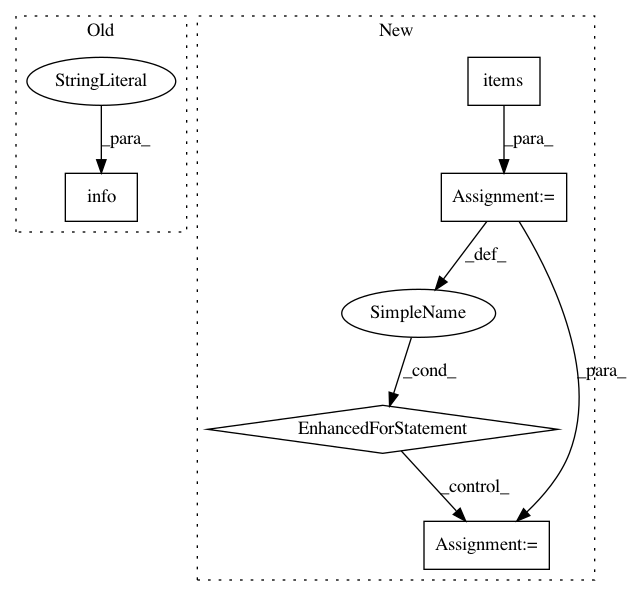

3d8431cf7da580c5884c537cf68abe9bedcdf4b5,anvio/taxoestimation.py,SCGsTaxonomy,estimate_taxonomy_for_metagenome,#SCGsTaxonomy#,763
Before Change
output=[]
num_metagenome=1
for estimate_taxonomy_presence in estimate_taxonomy_presences:
self.run.info("Possible presence ",
"/".join(list(estimate_taxonomy_presence.values())))
if num_metagenome > 1:
output+=[[self.db_path.replace(".db","")+"_metagenome_"+str(num_metagenome)]+list(estimate_taxonomy_presence.values())]
else:
output+=[[self.db_path.replace(".db","")]+list(estimate_taxonomy_presence.values())]
After Change
outpu_appear=[["taxon","number of scg"]]
for level, appear in dictonnary_number_appear.items():
outpu_appear+=[[level],[appear]]
self.show_taxonomy_estimation(outpu_appear)
self.generate_outpu_file(output,append=True)
for taxon, list_scgs in dictonarry_presence.items():
In pattern: SUPERPATTERN
Frequency: 3
Non-data size: 5
Instances
Project Name: merenlab/anvio
Commit Name: 3d8431cf7da580c5884c537cf68abe9bedcdf4b5
Time: 2019-08-28
Author: quentin.clayssen@gmail.com
File Name: anvio/taxoestimation.py
Class Name: SCGsTaxonomy
Method Name: estimate_taxonomy_for_metagenome
Project Name: ray-project/ray
Commit Name: f31ee84bfdc6dc2325c8890412a965e509074d0a
Time: 2020-09-05
Author: wlx65005@gmail.com
File Name: streaming/python/runtime/transfer.py
Class Name: DataReader
Method Name: __init__
Project Name: ray-project/ray
Commit Name: 1b1466748f1db72835a594d73d502e9787e080a9
Time: 2020-09-04
Author: wlx65005@gmail.com
File Name: streaming/python/runtime/transfer.py
Class Name: DataReader
Method Name: __init__